Customized electronics to meet product requirements
Customized footprint for product
Greater reliability
Ability to prototype & iterate faster
Better product integration
The machine that we are using is called the Stepcraft 420
In order to fabricate the FTDI board I will have to download the PCB traces and outline.
We also need the G-code in order to fabricate, Mr Steven taught us on how to use mods to generate our G-code for the milling machine.
| Steps | Image |
|---|---|
| Download the PCB traces and outline image | |
| Open mods and right click to get the menu --> programs --> open server program --> mill 2D png | 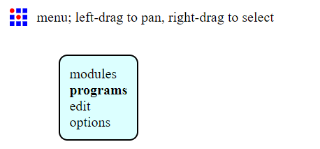 |
| Imput the trace image first | 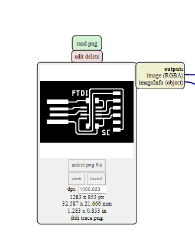 |
| Press calculate | 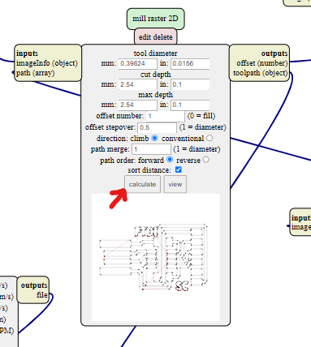 |
| After you press calculate, it will show you the route | 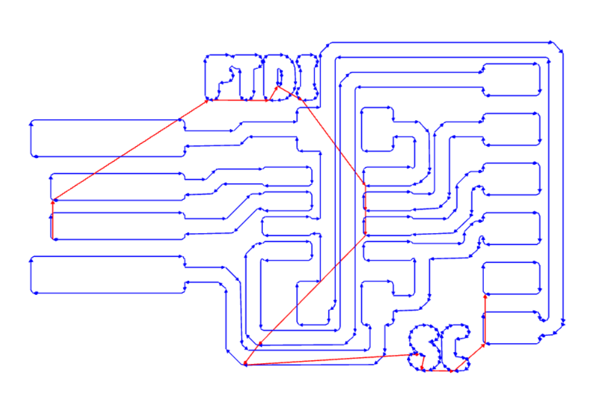 |
1)We need to put double sided tape at the base of the board so that it will secure the PCB to MDF board on the Stepcraft 420
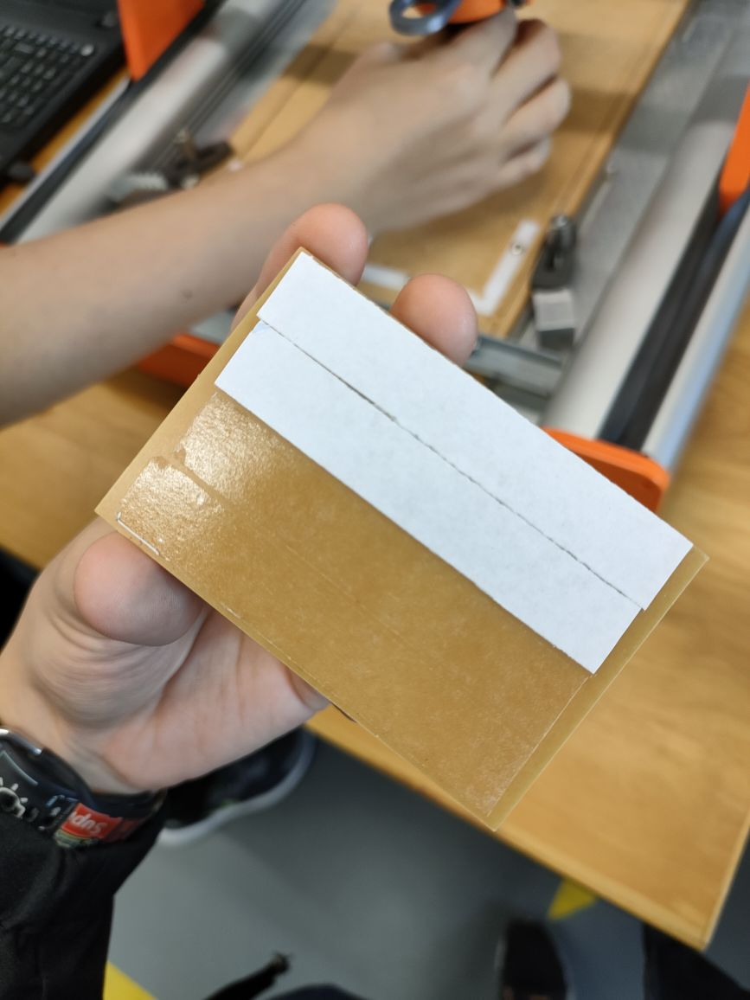2)Than we have to choose which position we want to place it in and than put masking tape at both end
3)Put the tool in and lock it but not too tight
| Axis | How to set? |
|---|---|
| Z-axis | Click Plunge button to set the Z axis (Orange arrow) 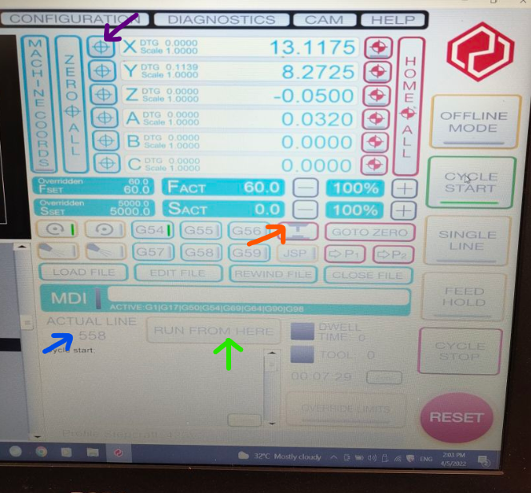 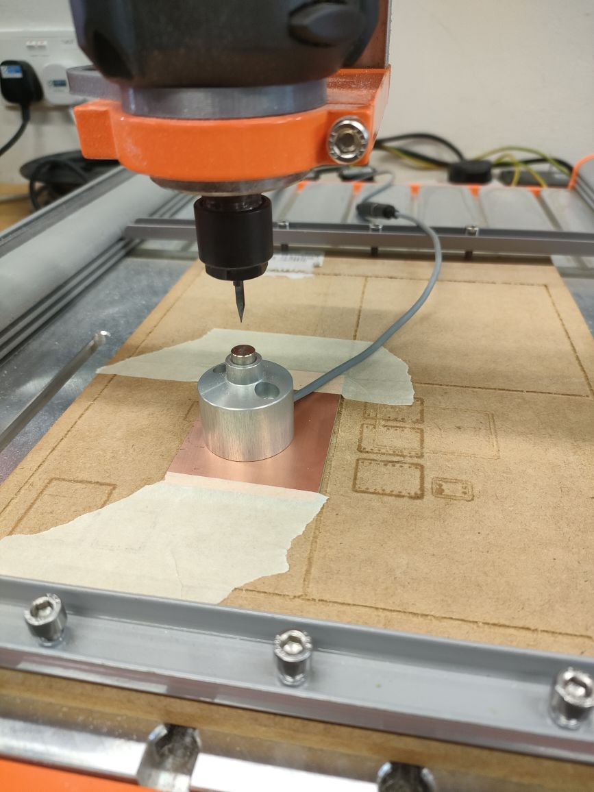 |
| X & Y axis | Click on the Purple Arrow to set X and Y to Zero 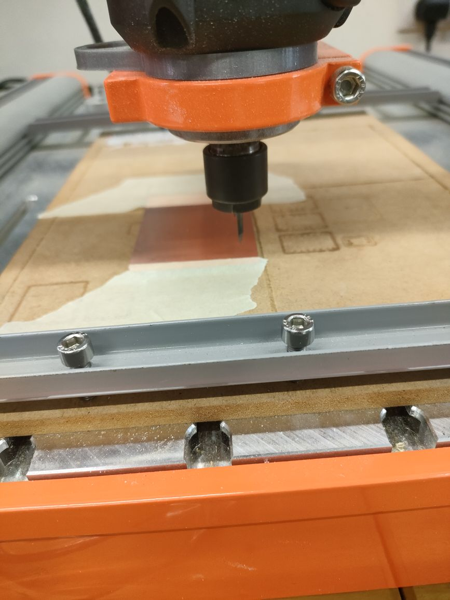 |
Load the NC file into the software
Than click on CYCLE START
After you start, if you realise that it is not cutting deep enough u can change the Z value than click on the blue arrow and set to 0 than click on RUN FROM HERE
Sometimes when milling we will realise that there might be burs on the side, This is probably because the tool is blunt. When burs are found on the circuit we will have to use sand paper to remove the burs.
| Types | Image |
|---|---|
| Without burs | 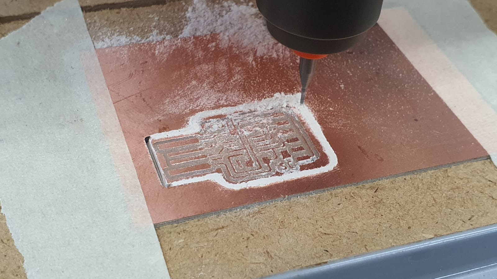 |
| With burs |  |
Process of the fabrication on the laptop
| The part that have already been cut will be yellow colour, the red line shows the direction | 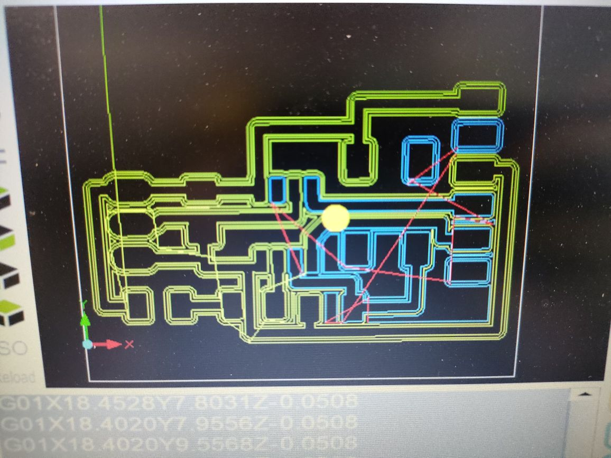 |
|---|---|
| Video of UPDI | |
| Video of UPDI outline |
| The finsh fabrication product for both FTDI and UPDI |  |
|---|---|
| After fabrication, I had to solder the FTDI and UPDI | 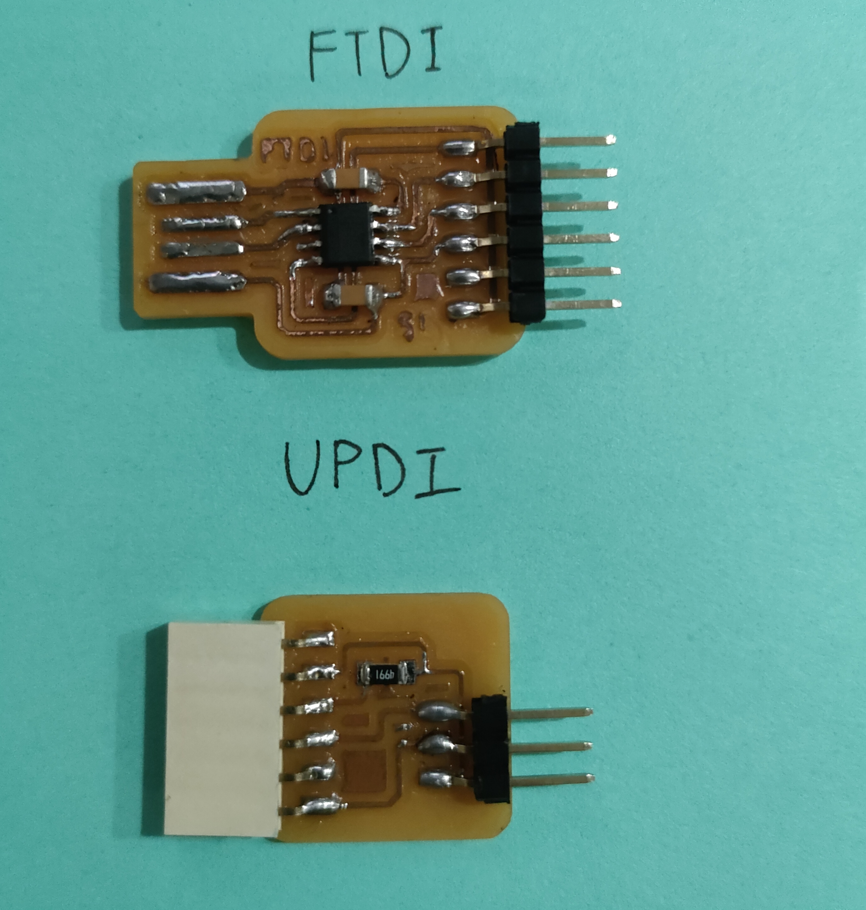 |